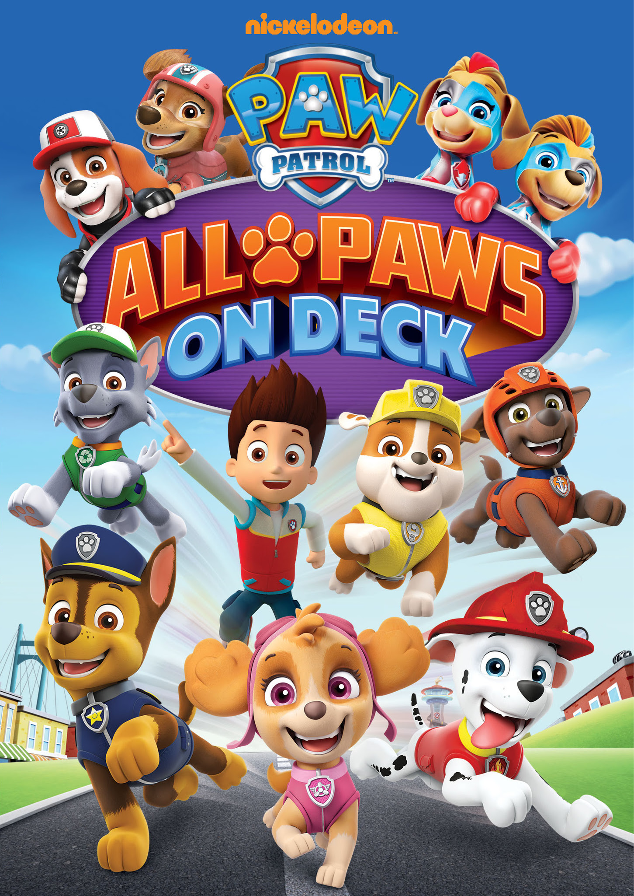
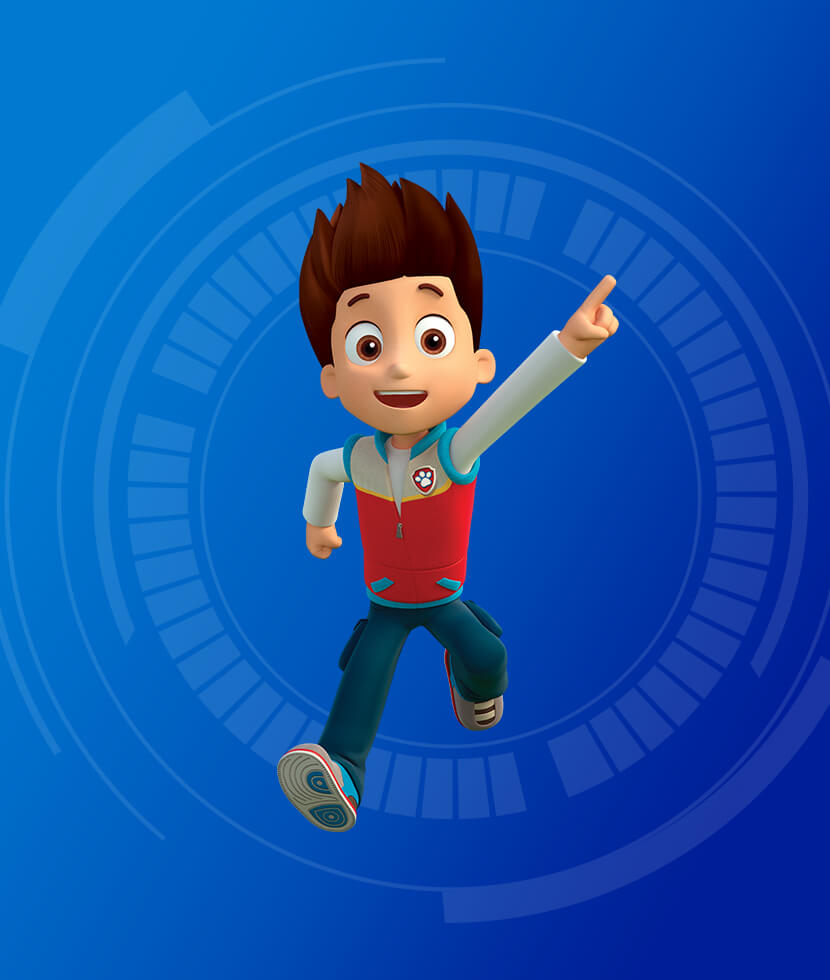
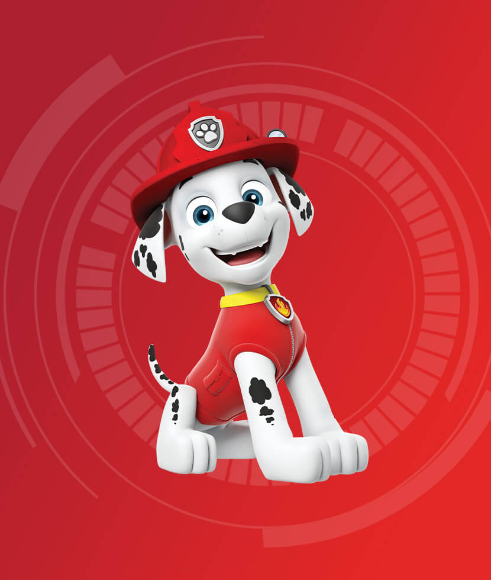
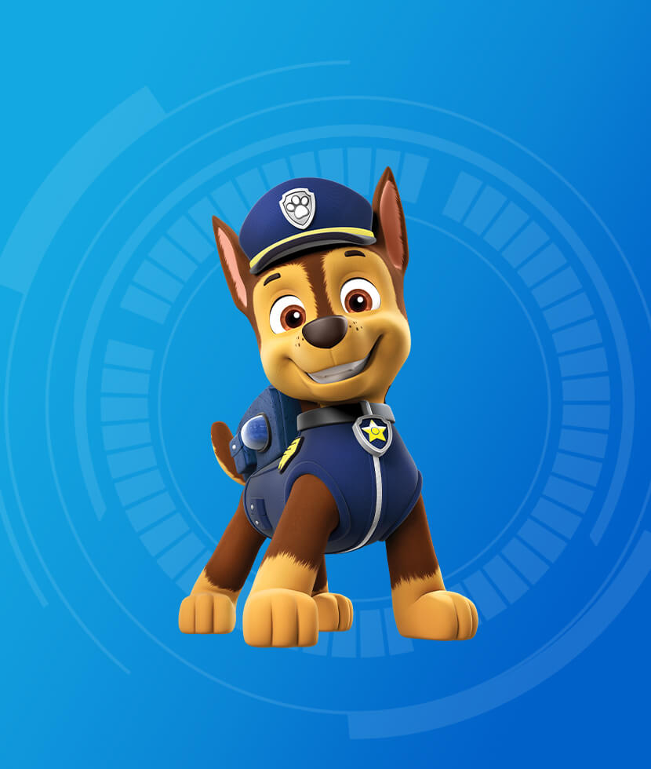
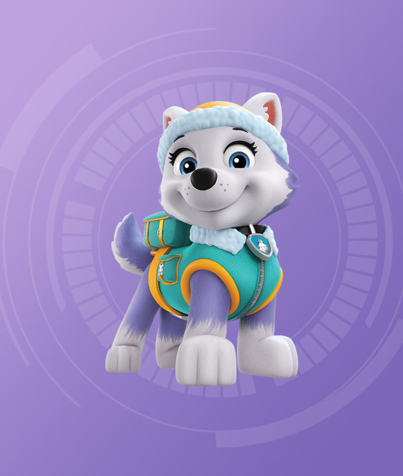
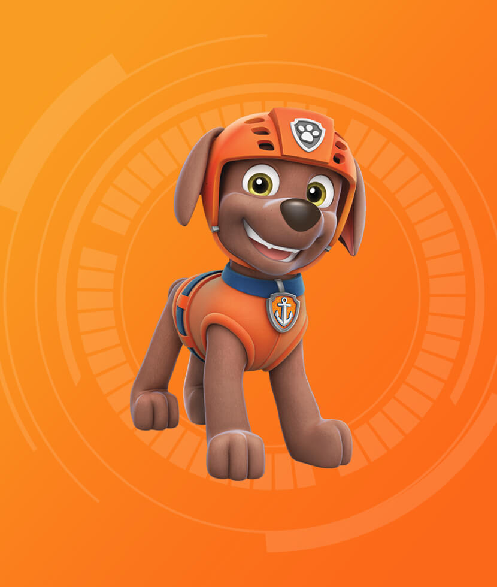

Paw Patrol

Paw Patrol is a Canadian animated TV series about a boy named Ryder and his team of rescue dogs who protect the seaside town of Adventure Bay.The dogs live in doghouses that transform into customized vehicles, or "pupmobiles", for their missions.The dogs are equipped with special hi-tech backpacks called "pup packs" that contain tools relating to their jobs.
Ryder
Ryder is a 10-year-old boy and the leader of the PAW Patrol in the children's show Paw Patrol
Skye

Skye is a female cockapoo and the first female member of PAW Patrol! She drives the helicopter and it is her job to transport team members from place to place, as well as saving people!
Marshal
Marshall from Paw Patrol is a six-year-old Dalmatian pup who serves as the team's fire-fighting dog, known for his enthusiastic, action-oriented personality, but also for being quite clumsy
Chase
Chase is a German Shepherd and the tallest pup in the PAW Patrol. A natural leader, he has a can-do attitude, “by the book” approach, and a blue hat!
Everest
Everest is an 8-year-old purple-hued Siberian husky who serves as a mountain rescue pup in emergencies relating to snow, ice, or mountains.
Rocky

Rocky is a recycling pup. His main color is green. He is a mixed-breed Eco pup who always has something to fix a problem. Rocky uses his handy claw to pick up pieces that could be recycled and use them for other purposes.
Rubble

Rubble is a construction Bulldog, a tough, five-year old pup with a heart of gold. Not only is he strong and eager to help, he's also funny, cracking a joke whenever the PAW Patrol need a laugh.
Zuma
Zuma is a playful, water-loving Labrador pup, and the team's water rescue dog. At five years old, he's a happy, energetic beach puppy who loves to laugh and surf.